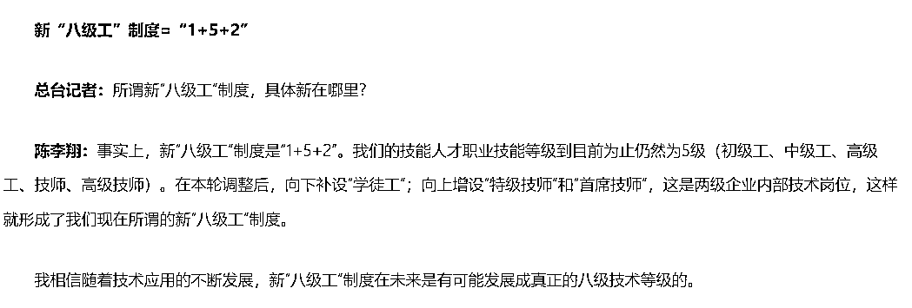

来源：https://lxkvj39q93t.feishu.cn/docx/Gc7udYlOuojRVyxaTOBc00EanTa
【微信昵称】
Gavin吴佳文
【星球ID】
佳文（老ID温戈）
【地区】
深圳
【个人介绍】
中医学学士、深圳大学工商管理硕士（MBA）
GPT 提效航海教练
广东省人工智能训练师考评员
深圳健康管理师考试、全媒体运营师等多个考试命题人
现在是个小创业者，努力生存中
24年主业务：人社部人工智能训练师培训考试
证书，只能成为加分项，成为你前行路上为你铺路的垫脚石，成为你进入某些行业的敲门砖
但在一个行业长久的发展，并不只能依靠证书，更多的是要坚持、长期的深耕，在行业里获得核心能力，才能形成自己的核心竞争力，证书说到底，只是一张纸，起到辅助作用
第一级：行业核心证书
第二级：行业职称证书/行业准入证书（职业资格证书）
第三级：区域人才对应证书
第四级：职业技能等级证书
第五级：口碑较好的“小证”
第六级：其他证书
什么是行业核心证书？核心证书指的就是，你这个行业、岗位，含金量最强最高最牛X的证，可以把你和其他人的水平直接拉开的证，不是所有人都有的证，但大牛一定有这个证做背书
没有这个证，你可以在这个行业里混，但混不到顶级，混到顶级的前提一定是你要持这个证
举例：
注册会计师、一建、PMP（？）
这种证书，一般都是全国甚至全球联考，考下来一般是可以升职加薪，迎娶白富美/高富帅/矮富美/矮富帅/白富丑/高富丑/矮富丑/，走上人生巅峰的
这种证书的考试难度也注定了，不是所有人都能考得下来，所以在金字塔尖尖上的人才有能力持有，也是区分行业顶级人才和普通人才的最重大区别
有些工作岗位，需要准入证书才能正式“执业”
比如医师、药师、律师、教师等，先要考下来，才能从事本职业工作，这些准入证书有一部分会对应“初级职称”（例如执业医师），有一部分不对应，需要再另考职称
哪怕你是本专业毕业的，你没有医师证，就做不了医师，没有处方权，不能给人开处方
所以这是入行必须要考的
准入证入门之后，再根据自己的工作年限，评或者考对应职称，才能涨工资，升官
准入证：重要且紧急
职称：重要但不紧急
还有一类职称，例如中级经济师、软考等，对专业限制不强，大多数人都可以考
职称证呢，在某些条件下是很有用的
比如退休，可以多领些退休金（但政策在变，等我们退休的时候有没有退休金都不一定）
比如你可以获得更多的升职机会
建议体制内或半体制内（含国企），或某些按资排辈情况比较严重的企业，优先把职称提起来
什么是区域人才对应证书？
特指，本省、本市、本区的区域内，有引进人才政策，这些人才都要有对应的证书作为申请条件
以北上广深杭五个地区的政策举例
紧缺人才：
北京：（2021年更新）
https://www.gov.cn/xinwen/2021-09/07/content_5635828.htm
上海：（2024年更新）
https://m12333.cn/policy/mkzkb.html
广州：（2024年更新）
https://m12333.cn/policy/mceme.html
深圳：（2021年更新）
http://hrss.sz.gov.cn/tzgg/content/post_8340671.html
深圳区级政策——以宝安区凤凰英才计划为例
https://www.baicebao.com/upload/portal/20240125/6b14368d4b58f6b9258cd554d777bda1.pdf
杭州：（2022年更新）
https://www.hangzhou.gov.cn/art/2022/8/16/art_1229063383_1824530.html
其他地区人才政策：搜索地区+紧缺人才
区域性高端人才政策
深圳孔雀计划：https://baike.baidu.com/item/%E5%AD%94%E9%9B%80%E8%AE%A1%E5%88%92/5568489
杭州 人才A-E https://zhuanlan.zhihu.com/p/688681793
从更新频率上可以看到，并不是每年都有更新，一般是2-4年更新一次紧缺人才目录
这类的目录更新后，会有配套政策出来，要么给钱，要么给户口，要么给配人才房，总之就是考这些证的核心就是薅ZF羊毛，为自己争取最强的背书
指由经人力资源社会保障部门备案的用人单位和社会培训评价组织（以下统称评价机构）在备案职业（工种）范围内对劳动者实施职业技能考核评价所颁发的证书。
说白了，是人社的证~
为了推进“放管服”改革要求，对现行《国家职业资格目录》外的、社会通用性强、专业性强、技术技能要求高的职业（工种），由经人力资源社会保障部门备案的用人单位和社会培训评价组织（以下统称评价机构）实行职业技能等级认定，颁发职业技能等级证书。
一般分为：五、四、三、二、一，五个等级，五级最低，一级最高
五级（初级工）、四级（中级工）、三级（高级工）、二级（技师）、一级（高级技师）
除这五个等级之外，还有三个等级，不进行考试评价
五级以下的叫“学徒工”，没有证书
高级技师以上的还有特级技师和首席技师，这两个是企业内部认定的等级，换了企业不认
二、一级，在一定条件下，可以贯通职称，等同使用

职业技能等级证书，国家是给发钱的，这个钱一般是从各地的“失业保险”基金里出
所以要求领补贴的人，是“企业在职”，事业编，公务员，学生，老师，无业游民，均不可以领取补贴
而且~一般是以省为单位，发补贴的时候一般不认外省的证书（毕竟是从本省的基金出钱啊~~）
各地对补贴申领要求也不一样
以广东为例：
广东省（非深圳）要求社保累计36个月以上（以失业保险为准）
深圳要求在缴状态或深户即可
补贴标准：一级3000，二级2500，三级2000，四级1500，五级1000
列入《紧缺人才目录》的，一、二、三级再上浮30%
有特殊政策的，更高
（比如深圳的区级政策，在对应名录里的，高级技师（一级）每人 3 万元；技师（二级）每人 2 万元； 高级工（三级）每人 5000 元）
到哪里领补贴呢？
到当地政务网，搜“职业技能提升补贴”“职业技能等级提升补贴”“失业技能提升补贴”，一般都是这三个类目办理
实在找不到，就打12333问人社！
2024年，全国各地基本都实行了新国标，现在报考职业技能等级也要求很高了
以职业技能三级为例
2023及以前的老国标：相关专业中专以上学历或非相关专业大专以上学历+2年社保，相关专业大专以上学历不限社保
2024的新国标：无相关学历+10年社保，或相关专业大专以上学历不限社保
下面是国标的全文
所以想跨别的专业考证，基本要从五级或四级开始考了
这一块的证书，很多都和上一个部分的“紧缺工种”重合，建议优先考取能考的且紧缺的，最高等级证书，再考虑别的证书，一般来说，按各地的补贴政策，一年只发一个证的补贴，一年考一个就行了，补贴基本可以cover学费+考试费
那说到这里有人就要问了，现在有哪些职业技能等级证书可以考
emmm，太多了，让我背到明天早上也背不完
大家自己去下面网站看，人社部的网
http://www.osta.org.cn/（考完查证书也在这里，基本现在全国都是考完半年左右拿证）
那除了考试拿职业等级的证书之外还有没有别的方式拿？
有的
还有两种评价模式：企业评价和技能大赛
企业评价，要本企业有这个评价资质，如果没有的话。。。也没用
技能大赛，进复赛且获奖就能拿了，一般是复赛前10%，会发证
技能大赛进到国赛的话，还能拿“五一劳动奖章”，有条件的宝子们可以试下
什么是“小证”？
就是非官方的证，但是在某些行业内，大部分都认的，认可比较高
比如IT 方面，华为的认证、腾讯的认证
比如心理咨询方面，中科院心理研究所的证（被人举报了，快停考了）
比如营养学会的注册营养师
比如项目管理方面的PMP(?)
为什么又要说PMP，因为含金量随着持证人数逐年上涨，证书核心竞争力也在下降
等等，不一一列举
那怎么来看哪些证书在行业内认不认呢？有几个比较简单的方式
1、到BOSS直聘查，查20个这个行业的对应岗位，大企业小企业都看一下，看岗位JD下面写的，有XXXX证优先，就说明认
2、到自媒体平台认证中心看，认证中心要求提交的认证资料里有的，就说明认
3、到招标网站看，招标网站上有要求，说明认（一般认的都是职称和职业技能等级）
其他证书就是最低的一档了
既不是职称，也不是职业技能等级，也不是行业内广泛认可的证
这种证有一个共同的特点，就是：
通过率高，基本“包过”的，都是这类证书
甚至某些证书，连考试都不要，参加个XX大会，就给你发一个“XX能力认证”
大家都不是傻子，这证有多少公信力，大家心里都有数的
例如：工信XXXX中心的大部分证书
前两个能，但最近查的也越来越严了，挂靠的钱也越来越少了
职业技能等级、小证等，基本没有挂靠的空间，太多混帐同行，以能“挂靠”为名收学员了，我不做这个事儿，我良心过不去
想知道能不能，别信网上的信息，到招聘网看有没有招这个证书的兼职的，直接问他证书到人不到行不行，能行的就是有挂靠，不能的就是挂靠不了
以个税APP为准，每年都会变
今年基本只有部分职称和职业资格证能退了
当然学历也可以退，考之前到个税APP查一下就行了
（弱弱的说，真退不了多少钱，是加了点儿免税额度）
那么，说到这里，今天的分享就基本结束了
相信大家对要考什么证书心里也多少有个方向了
我们来复习一下
核心优先：行业核心证书
次级优先：行业职称证书/行业准入证书（职业资格证书）
再次级优先：区域人才对应证书
一年考一个：职业技能等级证书
有时间精力再考：口碑较好的“小证”
实在对这个行业感兴趣，无所谓证书强度的：其他证书
我这边主做职业技能考试，全国都做，主做的证书是《人工智能训练师》，还有《健康管理师》和《公共营养师》
但~其他证书也都可以问我下，我以同行的身份去找兄弟机构询价，会比大家拿到更低的价格
最后~祝大家多学习，多赚钱，越努力，越幸运
欢迎链接~